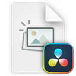
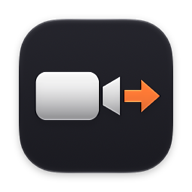
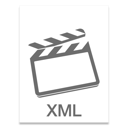
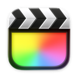
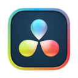

Open the recording folder from your Blackmagic ATEM Mini ISO and get a Final Cut Pro multicam project with your live cuts, your camera angles, and uncompressed WAV audio. Nothing is transcoded or uploaded.
macOS 15 or later · Apple silicon and Intel · Signed and notarized · About 4 MB · MIT license · All downloads

ATEM .drp
→

ATEM ISO to FCPXML
→

.fcpxml
→

Final Cut Pro

No DaVinci Resolve export needed. Use the .drp written by your ATEM.
From Recording to Final Cut
Install the App
Download the disk image, drag ATEM ISO to FCPXML to Applications, and open it. The source code is on GitHub.
Version 1.3.0 adds Check for Updates and optional automatic updates. For an older version, quit the app, drag the new copy into the same Applications folder, and choose Replace.
Open Your Recording
Mount the ATEM SSD and drop the recording folder on the window, or click Choose Recording…. In Finder, you can also use Open With on the .drp file.
Pick Cameras and Audio
The cameras you switched to live are already checked. Keep a WAV as the soundtrack, or choose ATEM live mix for the recorded mixed sound. Add extra audio angles if you want them available for editing.
Open in Final Cut
Click Create FCPXML, then Open in Final Cut Pro. You get a named event with the multicam, one Live Edit project, shared source compounds, and the selected source files. Your original files stay untouched.
Open in Final Cut Pro. The XML is saved next to the recording and opens straight into Final Cut.
Cuts, Transitions, and Audio
Camera cuts and mix transitions become editable multicam cuts and dissolves. Other effects use the program video or a marked dissolve.
Open the shared compounds in Final Cut to edit their contents. Names such as Camera 1 - ISO + WAV and Media Player 1 - Still identify what each contains. Changes to a shared compound affect its uses in the multicam and Live Edit.
Cross Dissolves with markers naming the original effect, or the program picture if you choose that option.
Media Player still
A separate still angle, a shared Media Player compound, and the original image in the browser.
Keys and fades to black
Video from the program recording, with a marker.
Camera and mic audio
Each camera's own WAV; one chosen WAV or ATEM live mix soundtrack across the cuts.
Compatibility
ATEM Mini Pro ISO · 1080p60 · Final Cut Pro 12.4
Tested with ATEM Mini Pro ISO recordings imported into Final Cut Pro 12.4. The app needs macOS 15 or later; the XML targets Final Cut Pro 10.6 and later. Other ATEM ISO models, frame rates, and firmware use the same format but have only been tested with synthetic recordings; if you try one, please report what happens.
Prefer a terminal or automation? The same converter is one Python file, and the app is tested to write exactly the same XML.
Questions
Do I Need Python, Homebrew, or DaVinci Resolve?
No. ATEM ISO to FCPXML is a signed, notarized Mac app with nothing to install besides itself. It reads the .drp the ATEM wrote and the headers of the MP4 and WAV files directly. A one-file Python version exists for the command line if you prefer it.
Does It Use the WAV Files?
Each camera uses its matching WAV from Audio Source Files when available, or the MP4 audio if the WAV is missing. The soundtrack defaults to a WAV when available. Choose ATEM live mix to keep the recorded mixed sound, including audio-follow-video (AFV) and mixer changes. Extra audio angles are available for editing in Final Cut; they do not play automatically. Changing picture cuts does not recompute AFV.
Can I Rename My Recording or Inputs?
Yes. Custom input labels and a renamed recording folder work. Keep the files and subfolders inside the recording intact. Use the .drp written by the ATEM; a project exported from Resolve is a different format.
Does It Copy My Footage?
No. The app writes one .fcpxml beside your .drp and leaves the media where it is. Final Cut's import settings decide whether footage is copied or linked. Keep the SSD connected until copying finishes, or while editing linked footage.
Will It Import into My Selected Event?
The XML names an event after the recording folder rather than targeting the selected event. It contains one multicam, one Live Edit project, shared camera and Media Player compounds, and selected source clips. Matching names from an earlier import may trigger Keep Both / Replace. Choose Keep Both to preserve existing edits; Final Cut may add numbered copies within that event.
What if I Stopped and Restarted Recording?
If the ATEM added a second recording to the same .drp, the app tells you so and does not open it. The command-line version can pick one with --session. Check the result carefully: this has only been tested with invented recordings.
What Should I Check Before Exporting?
Check audio sync, the end of the recording, and any markers in the timeline. The app warns about timing differences but does not correct them. Keyed sections use the ATEM program recording, or the first camera if that recording is missing. Stills swapped during recording may be missing.